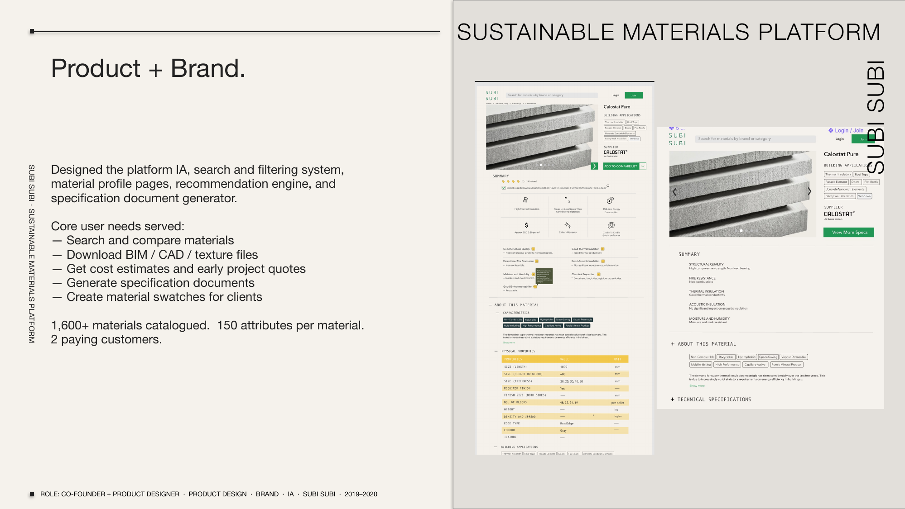

subi subi
A sustainable building materials discovery platform. Subi Subi was built for architects, specifiers, and developers who need to find, compare, and specify sustainable building materials — without drowning in manufacturer PDFs. 1,600+ materials catalogued. 150 attributes per material. Designed and built from scratch: platform IA, search and filtering system, material profile pages, recommendation engine, and specification document generator.